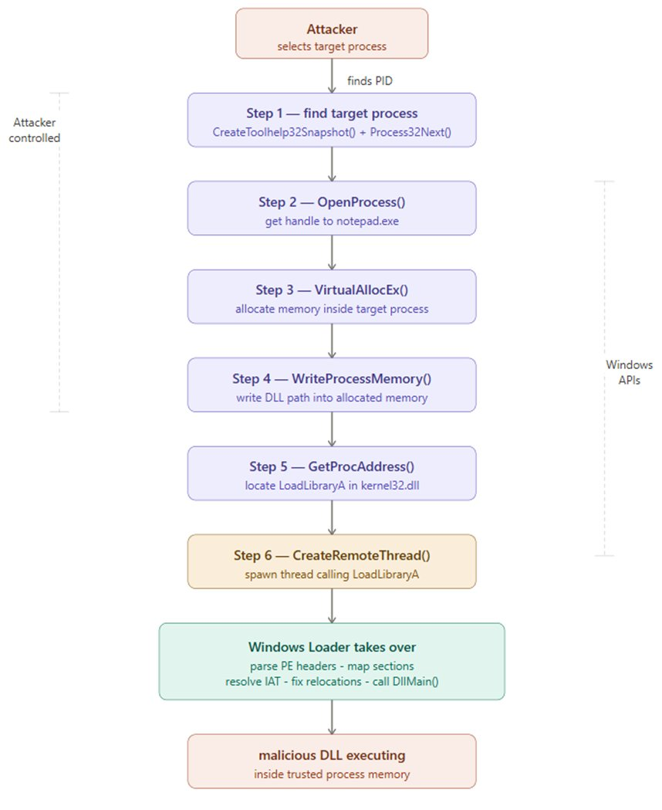
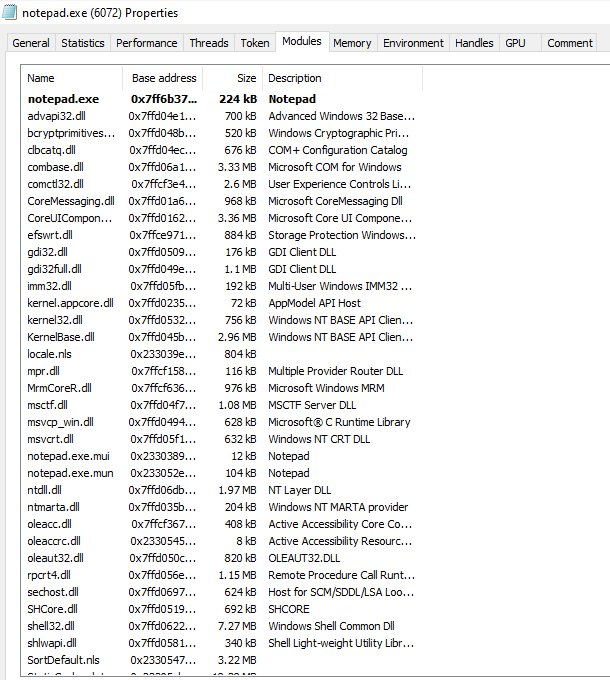
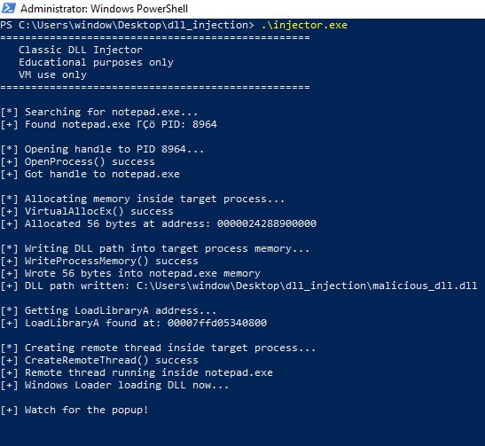
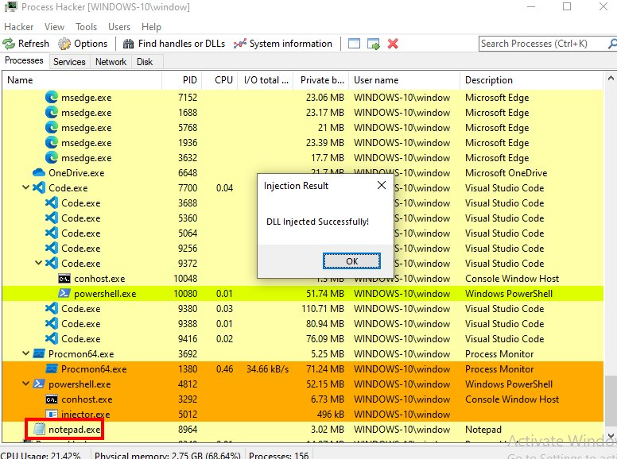
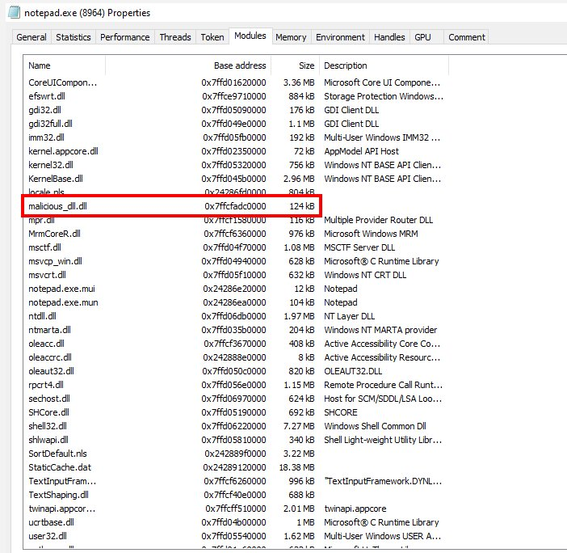
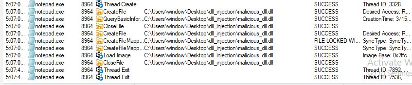

Introduction
Most people think malware always brings something new into a system, something suspicious that triggers defenders.
What if it doesn't have to? What if malicious code could run inside a process you already trust like Notepad, or a core Windows service, without introducing anything obviously suspicious from the outside?
That is exactly what DLL injection does. It is one of the most widely used techniques in real-world attacks, red team operations, and security research. Understanding it is fundamental to understanding modern endpoint threats.
What is a DLL?
A DLL (Dynamic Link Library) is a file containing shared code and data that multiple programs can load and use simultaneously. Instead of every program bundling its own copy of every function it needs, Windows stores commonly used functionality inside DLL files that live on the system.
- Memory efficiency - one copy of shared code loaded once, used by many processes simultaneously
- Modular architecture - components can be updated independently without rebuilding everything
- Code reuse - developers write functionality once and every program that needs it simply loads it
What is DLL Injection?
DLL injection is the technique of forcing a legitimate running process to load a DLL it never intended to load. An attacker manipulates a trusted running process from the outside, writing a malicious DLL into its memory space and forcing it to execute that code.
Once loaded, the malicious code runs inside the trusted process. Same name. Same PID. Same location on disk. The only change is what is running inside its memory.
Why Do Attackers Use It?
- Stealth through trust - Security tools monitoring by process name will see svchost.exe or notepad.exe. The malicious activity happening inside is much harder to attribute.
- Inherited privileges - The injected DLL inherits the full permissions of the host process. Inject into a high-privilege process and your code runs with those same elevated privileges.
- Bypassing security controls - Many policies whitelist trusted system processes. Operating from inside one bypasses controls that would catch standalone malicious executables.
- Persistence and monitoring - Once loaded inside a long-running process, a DLL can silently monitor activity, intercept function calls, or exfiltrate data.
How DLL Injection Works - Step by Step
Classic DLL injection uses a specific sequence of Windows API calls. The diagram below shows the complete attack flow:

Step 1 - Identify the Target Process
The attacker selects a legitimate running process. Common targets include svchost.exe, explorer.exe, or notepad.exe. CreateToolhelp32Snapshot() is used to enumerate all running processes and find the target PID.
Step 2 - OpenProcess()
OpenProcess(PROCESS_ALL_ACCESS, FALSE, targetPID)
Opens a handle to the target process - a reference that grants permission to interact with and manipulate it. Requires administrator rights.
Step 3 - VirtualAllocEx()
VirtualAllocEx(hProcess, NULL, pathSize, MEM_COMMIT | MEM_RESERVE, PAGE_READWRITE)
Allocates a region of memory inside the target process's own address space to hold the DLL path string.
Step 4 - WriteProcessMemory()
WriteProcessMemory(hProcess, allocatedAddr, dllPath, pathSize, &bytesWritten)
Writes the full file path of the malicious DLL into the allocated memory region inside the target process.
Step 5 - Locate LoadLibraryA
GetProcAddress(GetModuleHandle("kernel32.dll"), "LoadLibraryA")
Retrieves the memory address of LoadLibraryA - the legitimate Windows function for loading DLLs. Since kernel32.dll loads at a consistent base address across processes, this address is reliable and predictable.
Step 6 - CreateRemoteThread()
CreateRemoteThread(hProcess, NULL, 0, loadLibraryAddr, allocatedAddr, 0, NULL)
Creates a new execution thread inside the target process that calls LoadLibraryA. The Windows Loader takes over - reads the DLL, parses its PE headers, maps all sections into memory, resolves the IAT, fixes relocations, and calls DllMain. The malicious DLL is now fully executing inside the trusted host process.
Live Demonstration
The following demonstration was performed inside an isolated Windows 10 virtual machine. The injected DLL contains only a MessageBox() call - proving injection worked without performing any harmful action.
Environment: Windows 10 (VirtualBox VM) · Process Hacker 2 · Procmon by Sysinternals · A simple DLL displaying a MessageBox
Screenshot 1 - notepad.exe Modules Before Injection
Before running the injector, I opened Process Hacker and checked notepad.exe's loaded modules. At this point malicious_dll.dll is completely absent - this is the clean baseline before any injection occurs.

Screenshot 2 - Injector Running in PowerShell
With notepad open and Process Hacker watching, I ran the injector from an Administrator PowerShell terminal. Every API call executed and returned success.

Screenshot 3 - Proof of Injection: The Popup
Immediately after CreateRemoteThread executed, this appeared on screen. The MessageBox is being rendered by code executing inside notepad.exe. Process Hacker is visible in the background with notepad.exe highlighted as the host process.

Screenshot 4 - notepad.exe Modules After Injection
While the popup was still on screen I checked the Process Hacker modules tab for notepad.exe again. malicious_dll.dll is now clearly present - notice it has no Description field, unlike every legitimate DLL in the list. This is a detection signal.

Screenshot 5 - Procmon Capturing OS-Level Events
Procmon captured the complete sequence of events from the operating system's perspective, filtered to notepad.exe during the injection window.

What This Means for Detection
- Cross-process memory operations - VirtualAllocEx or WriteProcessMemory targeting another process is immediately suspicious. Legitimate software rarely writes into other processes' memory spaces.
- Remote thread creation - CreateRemoteThread spawning a thread inside a separate legitimate process is a strong behavioral indicator EDR tools specifically monitor.
- DLL loaded from unusual paths - Legitimate Windows DLLs load from System32 or known application directories. A DLL loading outside of System32 or known application directories is suspicious.
- Missing metadata - Every legitimate Windows DLL has a description, a verified publisher, and is digitally signed. A DLL with no description stands out immediately - as visible in Screenshot 4.
- Memory not backed by a file on disk - For advanced techniques like reflective injection, EDR tools look for executable memory regions with no corresponding file on disk.
Summary
DLL injection forces a trusted running process to load and execute a malicious DLL using legitimate Windows APIs - OpenProcess, VirtualAllocEx, WriteProcessMemory, and CreateRemoteThread to write a DLL path into a target process's memory and create a remote thread that calls LoadLibraryA.
The result is malicious code running inside a trusted process, inheriting its privileges, and hiding behind its identity.
Detection relies on behavioral monitoring, watching for cross-process memory writes, remote thread creation, DLLs loading from unusual locations, and missing digital signatures. Signatures and file hashes are insufficient on their own because the technique abuses entirely legitimate Windows functionality.